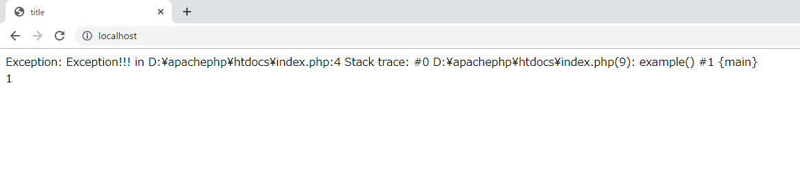
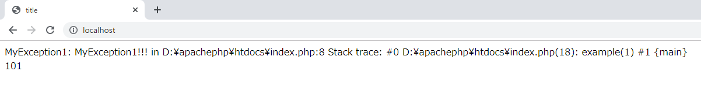

こんにちは。明月です。
プログラミングで例外処理は重要です。例外処理はプログラムロジックで開発者が考えられなかったこと、ユーザから可笑しいデータを受け取ったものを処理する文法です。
link - [C# スタディ - 23] 例外処理(try〜catch,throwそしてfinally)
link - [Java スタディ - 19] 例外処理( try ~ catch)
特に「PHP」で他の言語と差別性があることではないです。
link - https://www.php.net/manual/en/language.exceptions.php
<?php
$title = "title";
function example() {
throw new Exception('Exception!!!');
}
$errorMessage = "";
$check = 0;
try {
example();
// checkの値に「1」を加算する。
$check += 1;
} catch(Exception $e) {
$errorMessage = $e;
} finally {
// checkの値を「1」を加算する。
$check += 1;
}
?>
<!DOCTYPE html>
<html>
<head>
<title>
<?=$title?>
</title>
</head>
<body>
<?=$errorMessage?>
<br />
<!-- $checkの値を出力する。 -->
<?=$check?>
</body>
</html>

上の例をみれば、example関数は呼び出せたらthrowでexceptionが発生します。メインロジックで「try ~ catch ~ finally」の構文でtryの領域でexample関数を呼出します。
example関数ではExceptionで例外が発生して、catch領域に移動し、＄errorMessageの変数にエラーメッセージのデータを入れます。
最終的に「try ~ catch」構文の関係なずに、finallyの領域に移動しますが、$checkデータを「1」を加算しますね。
結果をみるとエラーメッセージと$checkの値が「1」になることを確認できます。
ここで確認ポイントはtry領域でexample()関数を呼出した後checkの変数が加算するところがありますが、example関数でエラーが発生しましたので、checkの加算は実施してないです。
基本的にthrowを発生すると処理インタラプトの「try ~ catch」に移動しますが、Exceptionを継承してcatchを種類別で処理することもできます。
<?php
// Exceptionを継承する。
class MyException1 extends Exception { }
class MyException2 extends Exception { }
$title = "title";
function example($type) {
// MyException1のエラーを発生する。
if($type == 1 ){
throw new MyException1('MyException1!!!');
}
// MyException2のエラーを発生する。
if($type == 2){
throw new MyException2('MyException2!!!');
}
// 一般エラーを発生する。
throw new Exception('Exception!!!');
}
$errorMessage = "";
$check = 0;
try{
// $typeのパラメタに「1」が入れることでMyException1のエラーが発生する。
example(1);
$check += 1;
} catch(MyException1 $e) {
$errorMessage = $e;
$check = 100;
} catch(MyException2 $e){
$errorMessage = $e;
$check = 1000;
} catch(Exception $e){
$errorMessage = $e;
} finally {
$check += 1;
}
?>
<!DOCTYPE html>
<html>
<head>
<title>
<?=$title?>
</title>
</head>
<body>
<?=$errorMessage?>
<br />
<!-- $checkは 100 + 1で 101が出力する。 -->
<?=$check?>
</body>
</html>

example関数に「1」という値をいれて「MyException1」を発生する。
catchでは「MyException1」、「MyException2」、「Exception」の例外を設定してエラー別で処理領域を分離しました。
結果をみれば「101」になりましたので、「MyExcepion1」が呼び出せ、finallyの領域に移動したことを確認できますね。
参考で文字上の例で「MyException1」が設定してない場合は「Exception」のエラーが発生されます。
「Exception」の領域が一番上に設定すると区分なしですべてのエラーがExceptionに通るので、一番下に配置しなければならないです。
- [CakePHP] ORMのテーブルFetch設定2020/02/18 03:00:00
- [CakePHP] Cakeフレームワークでデータベースに接続する時に使うQuery式とEntityクラス、Tableクラス、ResultSet2020/02/17 08:16:23
- [CakePHP] データベース(MariaDB(Mysql))を接続する方法2020/02/14 03:00:00
- [PHP] namespaceとuse2020/02/13 03:00:00
- [CakePHP] RequestとResponseに関して2020/02/12 03:00:02
- [CakePHP] PHPのCakeからAjax要請がある時、jsonタイプ(json_encode関数)でResponseする方法とControllerでViewを選択する方法2020/02/08 03:00:00
- [CakePHP] MVCフレームワークのCakeをインストールする方法2020/02/07 03:00:02
- [PHP] 自動require及びincludeをする方法(spl_autoload_register)2020/02/05 03:00:00
- [PHP] 匿名関数(ラムダ式)とクロージャ(closure)2020/02/04 03:00:00
- [PHP] PHPのコーディング領域とデザイン領域を分離するテンプレートライブラリ Smarty2020/02/02 03:00:00
- [PHP] Reflection - Variable編2020/02/01 03:00:00
- [PHP] Reflection - Method編2020/01/31 03:00:00
- [PHP] Reflection - Class編2020/01/30 03:00:00
- [PHP] エラーページ処理方法(追加: ob_cleanとdie関数使用方法)2020/01/29 03:00:00
- [PHP] 分散設定ファイル(.htaccess) 使用方法2020/01/28 03:00:00
- [CakePHP] ORMのテーブルFetch設定2020/02/18 03:00:00
- [CakePHP] Cakeフレームワークでデータベースに接続する時に使うQuery式とEntityクラス、Tableクラス、ResultSet2020/02/17 08:16:23
- [CakePHP] データベース(MariaDB(Mysql))を接続する方法2020/02/14 03:00:00
- [PHP] namespaceとuse2020/02/13 03:00:00
- [CakePHP] RequestとResponseに関して2020/02/12 03:00:02
- [CakePHP] PHPのCakeからAjax要請がある時、jsonタイプ(json_encode関数)でResponseする方法とControllerでViewを選択する方法2020/02/08 03:00:00
- [CakePHP] MVCフレームワークのCakeをインストールする方法2020/02/07 03:00:02
- [PHP] 自動require及びincludeをする方法(spl_autoload_register)2020/02/05 03:00:00
- [PHP] 匿名関数(ラムダ式)とクロージャ(closure)2020/02/04 03:00:00
- [PHP] PHPのコーディング領域とデザイン領域を分離するテンプレートライブラリ Smarty2020/02/02 03:00:00
- [PHP] Reflection - Variable編2020/02/01 03:00:00
- [PHP] Reflection - Method編2020/01/31 03:00:00
- [PHP] Reflection - Class編2020/01/30 03:00:00
- [PHP] エラーページ処理方法(追加: ob_cleanとdie関数使用方法)2020/01/29 03:00:00
- [PHP] 分散設定ファイル(.htaccess) 使用方法2020/01/28 03:00:00